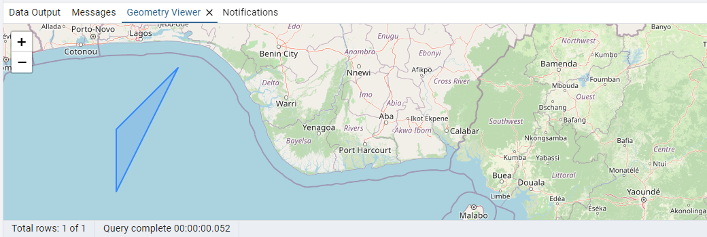

공간정보 웹서비스 개발
학습자료
postgreSQL
- postgreSQL 공식 홈페이지: https://www.postgresql.org
- postgreSQL 안내서: https://www.postgresql.org/files/documentation/pdf/16/postgresql-16-A4.pdf
postGIS
- postGIS 공식 홈페이지: https://postgis.net
- postGIS 안내서: https://postgis.net/workshops/en/postgis-intro/PostGISIntro.pdf
- postGIS 함수들: https://postgis.net/docs/manual-3.5/ko_KR/PostGIS_Special_Functions_Index.html
pgAdmin
- pgAdmin 공식 홈페이지: https://www.pgadmin.org
복습문제

복습문제
1. 다음 중 데이터베이스의 특징이 아닌 것은?
- 자료를 체계적으로 저장한다.
- 자료를 저장하기 쉽고 읽기 쉽게 관리한다.
- 자료를 모아 놓은 것은 모두 데이터베이스이다.
- 회사 ERP가 데이터베이스의 한 예이다.
2. DBMS의 약자로 맞는 것은?
- DataBase Management System
- DB Manager System
- DB Management System
- DataBase Manager System
3. postgreSQL에 대한 설명 중 틀린 것은?
- open source로 개발된다.
- 개인은 무료, 공공기관은 비용을 지불해야 한다.
- 공간정보에 특화된 기능을 제공한다.
포스트그레스큐엘이라고 읽는다.
4. 다음 중 DBMS가 아닌 것은?
- postgreSQL
- MS SQLServer
- MySQL
- DBeaver
5. 다음 중 공간정보 데이터베이스에서 지원하는 기능이 아닌 것은?
- 다양한 좌표계 지원
- 3차원 스캐닝 기능 지원
- 공간정보 자료(점, 선, 면)을 자유롭게 저장
- 공간정보 계산 기능 지원
6. 다음 중 EPSG에 대한 설명으로 틀린 것은?
- 석유 산업계에서 탐사를 위해 표준화된 좌표 체계가 필요해 정리한 코드들이다.
- EPSG의 원 뜻은
유럽 석유 조사 그룹이다. - 각 좌표계 코드 표현식은
EPSG-4326과 같은 식이다. - 한국의 좌표 체계도 포함되어 있다.
복습문제
1. postgreSQL 설치에 대한 설명 중 틀린 것은?
- 공식 홈페이지에는 설치 프로그램이 업로드되어 있지 않아 다른 사이트에 가서 받아야 한다.
- postgreSQL을 설치하면 postGIS도 자동으로 설치된다.
- 기본으로 설치되는 postgreSQL 관리자 ID는 ‘postgres’ 이다.
- postgreSQL과 접속하는 기본 프로그램으로 pgAdmin이 같이 설치된다.
2. DB 구성의 한 요소로 엑셀과 같이 2차원의 표 형태로 자료를 관리하는 것은?
- DBMS
- 함수
- sheet
- table
3. 엑셀과 달리 DB 테이블은 각 항목에 숫자를 적을지 문자를 적을지를 미리 정해야 한다. 그 이유를 2개 고르시오
- 빠른 처리를 위해
- 해킹 등 재난에 대비하기 위해
- 전기 사용량을 줄이기 위해
- 효율적이고 정확하게 자료를 기록하기 위해
4. postgreSQL에서 member 라는 이름의 테이블을 만드는 방법으로 맞는 것은?
- create table member (name varchar(10));
- create member (name char);
- create table member (name 문자)
- create table member (name varchar(10))
5. postgreSQL의 주요 데이터 유형에 대해 올바르게 설명한 것은?
- Integer: 약 -900경 ~ + 900경 사이의 정수를 다룰 수 있다.
- BigInt: 약 -21억 ~ + 21억 사이의 정수를 다룰 수 있다.
- boolean: 참 또는 거짓을 기록할 수 있다.
- varchar: 사번처럼 그 길이가 정해진 문자만 입력할 수 있다.
6. pgAdmin에 대한 설명으로 틀린 것은?
- postgreSQL에 접속하기 위한 클라이언트 프로그램이다.
- DBMS에 sql문을 보내 실행할 수 있다.
- table을 생성하는 기능도 제공한다.
- 그래픽 UI가 아닌 텍스트 기반의 클라이언트 프로그램이다.
7. psql에 대한 바른 설명은?
- postgreSQL에 접속해 postgreSQL을 관리하거나 SQL문을 실행하는 데 사용하는 텍스트 기반의 클라이언트 프로그램
- sql문 만을 실행할 수 있다.
- 유료 버전을 구입하면 그래픽 UI도 사용할 수 있다.
- 관리자 전용 프로그램이다.
8. pgAdmin에서 psql을 실행하는 아이콘은?

복습문제
1. SQL에 대해 맞는 설명은?
- DBMS에서만 사용하는 언어이다.
- 자료를 DB에 입력, 수정, 삭제, 검색할 때 사용한다.
- DB관리자만 사용할 수 있다.
- 유료 버전에서만 사용할 수 있다.
2. 자료를 입력하기 위해 사용하는 SQL 명령어는?
- insert into 테이블명
- input 테이블명
- input into 테이블명
- insert 테이블명
3. 자료를 검색하기 위해 사용하는 SQL 명령어는?
- get from
- query from
- find from
- select from
4. member 테이블의 모든 자료를 가져오는 SQL 명령어는?
- get all from member;
- select * from member;
- select % from member;
- query from member;
복습문제
1. postgis에 대해 맞는 설명은?
- postgreSQL을 설치하면 자동으로 같이 설치된다.
- postgreSQL에서 옵션으로 기능을 켜고 끌 수 있다.
- postgreSQL 설치 후 별도 설치해야 한다.
- pgAdmin을 통해서만 설치할 수 있다.
2. 1개의 점을 저장할 때 맞는 테이터 유형은?
- geometry
- geometry(Point)
- geom(Point)
- geom(Point, 4326)
3. 1개의 점을 저장하되, 좌표계를 EPSG:4326으로 정할 때 맞는 데이터 유형은?
- geometry(EPSG, 4326)
- geometry(Point, 4326)
- geom(Point, 4326)
- geom(4326, Point)
4. 한 번에 1개 이상의 점을 저장할 수 있는 데이터 유형은?
- geometry(MultiPoint)
- geometry(4326)
- geom(Points)
- geom(4326, MultiPoint)
5. 1개의 선을 저장할 수 있는 데이터 유형은?
- geometry(Line)
- geometry(OneLine)
- geometry(Line1)
- geometry(LineString)
6. 한 번에 1개 이상의 선을 저장할 수 있는 데이터 유형은?
- geometry(Lines)
- geometry(MoreLine)
- geometry(LineStrings)
- geometry(MultiLineString)
7. 1개의 면을 저장할 수 있는 데이터 유형은?
- geometry(Box)
- geometry(Polygon)
- geometry(Poly)
- geometry(2DBox)
8. 한 번에 1개 이상의 면을 저장할 수 있는 데이터 유형은?
- geometry(Area)
- geometry(Polygons)
- geometry(MultiPolygon)
- geometry(MultiArea)
9. geometry 형식에 입력된 자료는 열어 보아도 값이 매우 복잡해 사람이 이해하기 어렵다. 이를 X, Y 좌표값으로 변환해 보여주는 함수의 짝으로 맞는 것은?
- ST_getXY()
- ST_getX(), ST_getY()
- ST_X(), ST_Y()
- ST_convX(), ST_convY()
10. 좌표계 간 변환하는 함수는?
- ST_Transaction()
- ST_Conversion()
- ST_Convert()
- ST_Transform()
11. 현재 데이터베이스에 EPSG:4326으로 설계되어 있는 테이블이 있고 필드명은 location이다. 이 테이블의 값을 EPSG:3857로 변환해 사용해야 하는 경우 맞는 SQL문은?
- select st_transform(4326, 3857) from 테이블명
- select st_transform(location, 4326, 3857) from 테이블명
- select st_transform(location, EPSG:3857) from 테이블명
- select st_transform(location, 3857) from 테이블명
12. 위 11번 문제와 같이 좌표계 값을 변환해 사용할 경우 틀린 것은?
- 좌표계 변환할 때 약간의 오차가 있을 수 있다.
- 위 11번 문제의 답과 같이 select 문을 사용하면 원래 테이블의 값 자체가 변환된 EPSG:3857의 값으로 변한다.
- st_transform( ) 괄호 안의 값 중 숫자는 EPSG 코드를 뜻한다.
- 최종적으로 변환될 좌표계의 코드만 적어줘도 된다.
13. ST_DistanceSphere() 함수를 사용해 곡률을 반영한 점간 거리를 계산하는 경우, 이 계산 결과의 단위는?
- mm
- cm
- m
- km
14. 공간정보 자료를 설명하는 문자열을 이용해 geometry 값을 만들 때 사용하는 함수는?
- ST_GISDataFromText() 함수
- ST_GeometryFromText() 함수
- ST_GeomText() 함수
- ST_GeomFromText() 함수
15. 점이 면 안에 포함되어 있는지 여부를 판단하기 위해 만든 SQL 문의 일부이다. 다음 중 감싸고 있는 자료와 안에 있는 자료를 순서대로 적은 것은 ?
ST_Contains(A, B)
- A, B
- B, A
- 순서는 상관없다.
연습문제
공간데이터베이스 연습문제
Q. 다음과 같은 food 테이블을 SQL문을 이용해 생성

A.
create table food
(
name varchar(20),
price int
);
Q. food 테이블에 SQL을 사용해 값 입력하기(데이터 추가)
A.
insert into food (name, price) values ('짜장면', 6000);
insert into food (name, price) values ('탕수육', 21000);
insert into food (name, price) values ('연어구이', 11000);
insert into food (name, price) values ('고등어구이', 12000);
insert into food (name, price) values ('짬뽕', 7000);
Q. 다음과 같이 점이 지도에 표시되도록 자료 입력

A.
insert into point_test (location, name) values
('point( 5 4 )', '금 묻은 곳');
Q. 다음과 같이 점이 지도에 표시되도록 자료 입력
A.
insert into point_test (location, name) values
('point( -5 -4 )', '은 묻은 곳');
Q. 다음과 같이 점들이 지도에 표시되도록 1개의 자료 입력

A.
insert into multi_point_test (location, name) values
('multipoint( -5 -4, 5 4 )', '해상 공원');
Q. 다음과 같이 점들이 지도에 표시되도록 1개의 자료 입력
A.
insert into multi_point_test (location, name) values
('multipoint( -10 -11.5, 10 3 )', '석유 매장 추정지');
Q. 다음과 같이 선이 지도에 표시되도록 1개의 자료 입력

A.
insert into line_test (location, name) values
('lineString(-10 12.7, 10 11.5 )', '이동 최단거리');
Q. 다음과 같이 선이 지도에 표시되도록 1개의 자료 입력

A.
insert into line_test (location, name) values
('lineString(-20 -12.7, -10 -11.5, 5 3.7 )', '이동 최단거리');
Q. 다음과 같이 여러 선이 지도에 표시되도록 1개의 자료 입력

A.
insert into multi_line_test (location, name) values
('MultiLineString( (20.5 0.5, 20.6 0.6 ), (20.8 0.6, 20.95 0.61) )', '등산로');
Q. 다음과 같이 여러 선이 지도에 표시되도록 1개의 자료 입력

A.
insert into multi_line_test (location, name) values
('MultiLineString( (3 4, 3 5, 4 6, 5 4 ), (0 1, 1 1, 2 2, 3 1, 1 0) )', '등산로');
Q. 다음과 같이 면이 지도에 표시되도록 1개의 자료 입력

A.
insert into polygon_test (location, name) values
('polygon( (3 4, 3 5, 4 6, 3 4 ) )', '어장1');
Q. 다음과 같이 면이 지도에 표시되도록 1개의 자료 입력
A.
insert into polygon_test (location, name) values
('polygon( (3.5 4, 3.3 5.2, 4.7 6.1, 5.0 3.5, 5.3 3.2, 3.5 4 ) )', '어장 2');
Q. 다음과 같이 여러 면이 지도에 표시되도록 1개의 자료 입력

A.
insert into multi_polygon_test (location, name) values
('Polygon( (3 -5, 4 -5, 2 -6, 3 -5 ), (2.5 -7, 5 -8, 4 -9, 2.5 -7) )', '석유 매장지');
Q. 다음과 같이 여러 면이 지도에 표시되도록 1개의 자료 입력

A.
insert into multi_polygon_test (location, name) values
('Polygon( (1 4, 1 5, 2 6, 1 4 ), (3.5 4, 3.3 5.2, 4.7 6.1, 5.0 3.5, 5.3 3.2, 3.5 4 ) )', '어장들');
국토정보프로그래밍(python)
학습자료
python
-
python 공식 홈페이지: https://www.python.org
-
python 무료 책: 점프 투 파이썬
복습문제

1. 파이썬의 개요
1. 파이썬이라는 이름에 대한 설명 중 틀린 것은?
- 비단뱀이라는 뜻도 있다.
- 고대 신화에 나오는 큰 뱀 이라는 뜻도 있다.
- 제작자가 좋아하는 코미디에서 따온 이름이다.
- 제작자의 이름이다.
2. 파이썬의 특징이 아닌 것은?
- 언어 자체는 쉽지만 아직 라이브러리가 많지 않아 일일이 개발해야 하는 어려움이 있다.
- 문법이 비교적 간결하다.
- 배우려고 마음만 먹으면 도움이 될 참고자료들이 넘쳐난다.
- 무료로 사용할 수 있다.
3. 파이썬으로 만들면 문제가 생길 만한 프로그램 종류는?
- 웹사이트
- AI 프로그램
- 데이터 분석 프로그램
- real time을 요하는 실시간 처리가 중요한 프로그램
4. 파이썬의 언어적 특징이 아닌 것은?
- 인터프리터 언어이다.
- 대화형 언어이다.
- 실행파일(exe 파일)이 생성된다.
- 질문하면 대답하는 형식으로 프로그램이 진행된다.
5. 다음 중 파이썬의 프롬프트는?
- ###
- >>>
- <<<
- ***
2. 파이썬 자료형
1. 한 변수에 -3, -2, -1, 이렇게 3개 값만 들어간다. 이 경우 파이썬은 이 변수의 자료형을 무엇이라 판단할까?
- 문자열
- 정수형(integer)
- 실수형(float)
- 참/거짓형(boolean)
2. 다음 코드를 실행한 후 메모리의 모습으로 맞는 것은?
>>> a = 5
>>> b = 10
>>> a = 7


3. 다음 코드의 결과는?
>>> a = 1
>>> b = a + 0.1
>>> print (b)
- 1 + 0.1
- 1.01
- 10.1
- 1.1
4. 다음 코드에서 변수 b의 자료형은?
>>> a = 1
>>> b = a + 0.1
- 문자열
- 정수형(integer)
- 실수형(float)
- 참/거짓형(boolean)
5. 다음 코드의 결과는?
>>> 5 // 3
- 1
- 1.6666666666666667
- 2
- 3
6. 다음 코드의 결과는?
>>> 5 % 3
- 1
- 1.6666666666666667
- 2
- 3
7. 다음 코드의 결과는?
>>> 3 ** 3
- 9
- 33
- 27
- 45
8. 다음 코드의 결과는?
>>> a = "올해 연도 : "
>>> b = 2024
>>> c = a + b
- 에러가 발생한다.
- ‘올해 연도 : 2024’
- ‘올해 연도 :’
- ‘2024’
9. 바로 위 문제에서 에러가 발생했다면 이를 해결하기 위한 방법은?
- 문제없이 실행된다.
- c = a + b 를 c = a + len(b)로 수정한다.
- c = a + b 를 c = str(a) + b로 수정한다.
- c = a + b 를 c = a + str(b)로 수정한다.
10. 다음 코드의 결과는?
>>> a = 2024
>>> b = "올해 연도 : {0}".format(a)
>>> b
- 에러가 발생한다.
- ‘올해 연도 : 2024’
- ‘올해 연도 :’
- ‘2024’
11. 다음 코드의 결과는?
>>> a = "올해 연도 : {0}"
>>> b = 2024
>>> c = a.format(b)
>>> c
- 에러가 발생한다.
- ‘올해 연도 : 2024’
- ‘올해 연도 :’
- ‘2024’
12. list를 사용하는 이유가 아닌 것은?
- 변수 하나로 많은 양의 자료를 관리할 수 있다.
- 파이썬은 사용할 수 있는 변수의 갯수가 128개로 정해져 있다.
- 자료마다 변수를 생성하는 것은 매우 불편하고 사실상 그렇게는 개발이 불가능하기 때문
- 개발의 편리함때문
13. 다음 list에서 하나의 요소를 읽어오는 코드의 결과는?
>>> a = ['짜장', '짬뽕', '탕수육', '회']
>>> a[2]
- ‘짜장’
- ‘짬뽕’
- ‘탕수육’
- ‘회’
14. list에서 하나의 요소를 바꾼 코드의 결과는?
>>> a = ['짜장', '짬뽕', '탕수육', '회']
>>> a[2] = '깐풍기'
>>> a
- [‘짜장’, ‘짬뽕’, ‘탕수육’, ‘회’]
- [‘짜장’, ‘짬뽕’, ‘깐풍기’, ‘회’]
- ‘깐풍기’
- 에러가 발생하고 값을 바꿀 수 없다.
15. list에 하나의 요소를 추가한 코드의 결과는?
>>> a = ['짜장', '짬뽕', '탕수육', '회']
>>> a.append("육회")
>>> a
- [‘짜장’, ‘짬뽕’, ‘탕수육’, ‘회’]
- [‘짜장’, ‘짬뽕’, ‘탕수육’, ‘회’, ‘육회’]
- ‘육회’
- 에러가 발생하고 값을 바꿀 수 없다.
16. list에 하나의 요소를 특정 위치에 추가하기 위해, ??? 부분에 작성해야 하는 코드는?
>>> a = ['짜장', '짬뽕', '탕수육', '회']
>>> ???
>>> a
['짜장', '짬뽕', '깐풍기', '탕수육', '회']
- a.insert(0, ‘깐풍기’)
- a.insert(1, ‘깐풍기’)
- a.insert(2, ‘깐풍기’)
- a.insert(3, ‘깐풍기’)
17. list에 하나의 요소를 삭제하기 위해, ??? 부분에 작성해야 하는 코드는?
>>> a = ['짜장', '짬뽕', '탕수육', '회']
>>> ???
>>> a
['짜장', '탕수육', '회']
- del a[0]
- a.del[0]
- del a[1]
- a.del[1]
18. 다음 코드의 결과를 순서대로 표시한 것은?
>>> 2 < 5
???
>>> 5 < 2
???
- True, True
- True, False
- False, True
- False, False
3. 파이썬 제어문
1. 파이썬에서 제공하는 제어문 2가지는?
- 조건문, 입출력
- 입출력, 라이브러리
- 조건문, 반복문
- 반복문, 입출력
2. 조건식이 참인 경우에만 실행되는 제어문은?
- 입출력
- 라이브러리
- 반복문
- 조건문
3. 다음 조건문에서 실행되는 내용은?
if 3 < 5 :
a = 1 ⓐ
b = 2 ⓑ
c = 3 ⓒ
d = 4 ⓓ
- ⓐ
- ⓐ ⓑ
- ⓐ ⓑ ⓒ
- ⓓ
4. 다음 조건문에서 실행되는 내용은?
if 3 > 5 :
a = 1 ⓐ
b = 2 ⓑ
c = 3 ⓒ
d = 4 ⓓ
- ⓐ
- ⓐ ⓑ
- ⓐ ⓑ ⓒ
- ⓓ
5. 다음 조건문의 실행 결과는?
if 3 == 5 :
print("a")
print("b")
- 에러가 난다.
- ‘a’
- ‘b’
- ‘a’
‘b’
6. 다음 조건문의 실행 결과는?
if 3 != 5 :
print("a")
print("b")
- 에러가 난다.
- ‘a’
- ‘b’
- ‘a’
‘b’
7. 조건식이 참이 아닐 경우 실행하는 부분은?
- iif
- then
- print()
- else
8. 다음 조건문 코드의 실행 결과는?
a = 10
if a < 3 :
print ("apple")
else:
print ("banana")
- 에러가 발생한다.
- ‘apple’
- ‘banana’
- ‘apple’
‘banana’
9. 다음 조건문 코드의 실행 결과는?
a = 3
if a < 7 :
print ("apple")
elif a < 5 :
print ("kiwi")
else:
print ("banana")
- 에러가 발생한다.
- ‘apple’
- ‘kiwi’
- ‘banana’
10. 다음 조건문 코드의 실행 결과는?
a = 9
if a < 7 :
print ("apple")
elif 8 <= a :
print ("kiwi")
else:
print ("banana")
- 에러가 발생한다.
- ‘apple’
- ‘kiwi’
- ‘banana’
11. 다음 조건문 코드의 실행 결과는?
a = 11
if a < 7 :
print ("apple")
elif a < 4 :
print ("kiwi")
else:
print ("banana")
- 에러가 발생한다.
- ‘apple’
- ‘kiwi’
- ‘banana’
12. 다음 조건문 코드의 실행 결과는?
a = 6
if a < 7 :
print ("apple")
if 5 <= a :
print ("mango")
elif a < 4 :
print ("kiwi")
else:
print ("banana")
- ‘apple’
‘mango’ - ‘apple’
- ‘mango’
- ‘banana’
- ‘kiwi’
4. 파이썬 반복문
1. “~하는 동안에” 라는 뜻으로 조건식이 참인 경우에만 반복 처리하는 반복문은 ?
- for
- during
- whale
- while
2. 주로 리스트의 모든 요소들을 하나씩 꺼내서 처리하는 방식의 반복문은?
- for
- during
- whale
- while
3. 다음 코드의 실행 결과는?
while True:
print("apple")
1. 에러가 난다.
2. 아무 것도 실행되지 않는 것처럼 보인다.
3. "apple"
4. "apple"이 무한히 출력된다.
4. 다음 코드의 실행 결과는?
a = 3
while a < 5 :
print(a)
- 에러가 난다.
- 아무 것도 실행되지 않는 것처럼 보인다.
- “3 4 5”
- “3“이 무한히 출력된다.
5. 다음 코드의 실행 결과는?
a = 3
while a < 5 :
print (a)
a = a + 1
- 에러가 난다.
- “3“이 무한히 출력된다.
- 3
4 - 3
4
5
6. 다음 코드의 실행 결과는?
a = 3
while a < 5 :
print (a)
a = a + 1
- 에러가 난다.
- “3“이 무한히 출력된다.
- 3
4 - 3
4
5
7. 다음 코드의 실행 결과는?
a = [1, 2, 3]
for item in a :
print(a)
- [1, 2, 3]
- 1
2
3 - [1, 2, 3]
[1, 2, 3]
[1, 2, 3] - 1 2 3
8. 다음 코드의 실행 결과는?
a = [1, 2, 3]
for item in a :
print(item)
- [1, 2, 3]
- 1
2
3 - [1, 2, 3]
[1, 2, 3]
[1, 2, 3] - 1 2 3
9. 다음 코드의 실행 결과는?
a = [1, 2, 3]
for item in a :
if item = 2 :
break
print(item)
- 에러가 발생한다.
- 1
2
3 - [1, 2, 3]
[1, 2, 3]
[1, 2, 3] - 1
10. 다음 코드의 실행 결과는?
a = [1, 2, 3]
for item in a :
if item == 2 :
break
print(item)
- 에러가 발생한다.
- 1
2
3 - [1, 2, 3]
[1, 2, 3]
[1, 2, 3] - 1
11. 다음 코드의 실행 결과는?
a = [1, 2, 3]
for item in a :
if item == 2 :
continue
print(item)
- 1
2 - 1
2
3 - 2
- 1
3
5. 함수
1. 영어로는 function으로 번역되며, 프로그램 내에서 어떤 기능을 하도록 미리 만들어 놓은 것은?
- 라이브러리
- 제어문
- 비교문
- 함수
2. 다음 중 파이썬 내장 함수가 아닌 것은?
- print()
- len()
- get_temp()
- str()
3. 다음과 같이 사용자 정의 함수를 호출할 경우 실행되는, 함수의 몸체 부분은?
def plus1(a) :
b = 1 ⓐ
c = 2 ⓑ
d = 3 ⓒ
e = 4 ⓓ
plus1(5)
- ⓐ
- ⓐ ⓑ
- ⓐ ⓑ ⓒ
- ⓐ ⓑ ⓒ ⓓ
4. 다음 코드는 결과가 나오지 않는다. 그 이유는?
def plus1(a) :
b = a + 1
res = plus1(3)
print (res)
- 파이썬이 이해 못하는 심각한 오류가 있다.
- 함수 정의할 때 들여쓰기를 잘못 했다.
- res 는 예약어라 변수명으로 사용하면 안된다.
- plus1() 함수는 결과값을 리턴하지 않고 있다.
5. 다음 코드의 결과는?
def plus1(a) :
b = a + 1
return b
res = plus1(3)
print (res)
- 1
- 2
- 3
- 4
6. 다음 코드는 에러를 발생시킨다. 그 이유는?
def plus1(a) :
b = a + 1
return b
res = plus1(3)
print (b)
- plus1() 함수 내에 심각한 오류가 있다.
- b는 plus1() 함수 내에서만 사용하는 지역변수다
- res 는 예약어라 변수명으로 사용하면 안된다.
- 아무런 에러없이 잘 실행된다.
6. 파이썬 입출력
1. 입력의 옳은 예가 아닌 것은?
- 키보드로부터 입력
- 파일로부터 입력
- 모니터로부터 입력
- 마우스로부터 입력
2. 출력의 옳은 예가 아닌 것은?
- 파일로 출력
- 스피커로 출력
- 프린터로 출력
- 마이크로 출력
3. 키보드로 문자를 입력받을 때 사용하는 함수는?
- keyboard()
- str()
- input()
- print()
4. 키보드로 숫자를 입력받을 때 사용하는 함수 조합은?
- int( input() )
- input( int() )
- str( input() )
- input( str() )
5. 파일을 새로 만들고 그 안에 내용을 쓰려 한다. 잘못된 부분은?
file = open("data.txt", 'r') ⓐ
file.write("내 이름은 별똥별") ⓑ
file.close() ⓒ
- 잘못된 부분 없음
- ⓐ
- ⓑ
- ⓒ
6. 다음 코드는 파일에서 내용을 읽어오는 코드이다. data.txt 파일의 내용이 다음과 같을 때 이 코드의 실행 결과는?

file = open("data.txt", 'r')
line = file.readline()
print (line)
file.close()
- 역삼역
- 기러기
- 역삼역
기러기 - 아무 것도 표시되지 않는다.
7. 다음 코드는 파일에서 내용을 읽어오는 코드이다. data.txt 파일의 내용이 다음과 같을 때, 파일의 전체 내용을 다 가져오려 하는 경우 ??? 부분에 맞는 것은?
file = open("data.txt", 'r')
lines = file.readlines()
for line ??? lines :
print (line)
file.close()
- as
- in
- all
- with
8. 다음 코드는 엑셀용 csv 파일을 만들기 위한 코드이다. 엑셀에서 열었을 때 왼쪽처럼 보일 거라는 기대와 달리 오른쪽 그림처럼 보이고 있다. 해결 방법은?

file = open("data.csv", 'w')
file.write ("이름,전화번호")
file.write ("홍길동,02-1111-1111")
file.write ("박길동,02-1111-2222")
file.write ("최길동,03-1111-3333")
file.close()
- 확장자를 csv가 아닌 xlsx 로 바꿔서 생성한다.
- 각 줄의 끝에 “,“를 추가한다.
- 각 줄의 끝에 개행문자인 “\n“을 추가한다.
- 각 줄의 앞에 “,“를 추가한다.
7. 파이썬 라이브러리
1. 파이썬에서 제공하는 math 라이브러리의 기능 중 올림 기능(예: 3.1 => 4)을 제공하는 함수는?
- ceil()
- floor()
- gcd()
- print()
2. 파이썬에서 제공하는 math 라이브러리의 기능 중 내림 기능(예: 3.1 => 3)을 제공하는 함수는?
- ceil()
- floor()
- gcd()
- print()
3. 임의의 수(난수)를 만들어 주는 기능을 제공하는 파이썬 표준 라이브러리는?
- math
- random
- string
- AI
4. 다음 코드의 실행 결과는?
import random
a = random.randint(1, 7)
print(a)
- 0
- 5
- 10
- 15
5. 다음 중 파이썬의 AI 관련 외부 라이브러리가 아닌 것은?
- TensorFlow
- PyTorch
- Scikit Learn
- pip
6. 다음 중 파이썬의 데이터 시각화 라이브러리는?
- TensorFlow
- Matplotlib
- pip
- anaconda
7. 다음 중 파이썬의 라이브러리 관리 프로그램은?
- TensorFlow
- Matplotlib
- pip
- anaconda
8. 다음 중 파이썬의 라이브러리를 효율적으로 관리하기 위해 가상환경을 만들어 각 가상환경마다 각기 다른 라이브러리 버전을 설치할 수 있도록 해 주는 프로그램은?
- TensorFlow
- Matplotlib
- pip
- anaconda
9. 다음 중 아나콘다에 대한 설명 중 틀린 것은?
- 오픈소스로 누구나 무료로 사용할 수 있다.
- 파이썬이 실행되는 가상환경을 만들어 주는 프로그램이다.
- 라이브러리 버전 문제가 발생하는 경우 좋은 해결책이다.
- 각 가상환경마다 파이썬 버전을 달리 설정할 수 있다.
연습문제
연습문제 - 파이썬 자료형
1. “apple” 문자열의 길이를 구하는 코드를 작성하시오.
답(안) 1
a = "apple"
b = len(a)
print(b)
답(안) 2
a = "apple"
print(len(a))
답(안) 3
print(len("apple"))
2. “오늘 기온은 30도“와 같이 보여지는 코드를 작성하시오. 단 30은 숫자형임.
답(안) 1
a = "오늘 기온은 "
b = 30
c = a + str(b) + "도"
print(c)
답(안) 2
a = "오늘 기온은 {0}도".format(30)
print(a)
3. “오늘 기온은 30도, 습도는 65%“와 같이 보여지는 코드를 작성하시오. 단 30, 65는 숫자형임.
답(안) 1
a = "오늘 기온은 "
b = 30
c = "도, "
d = "습도는 "
e = 65
f = "%"
g = a + str(b) + c + d + str(e) + f
print(g)
답(안) 2
a = "오늘 기온은 {0}도, 습도는 {1}%".format(30, 65)
print(a)
4. a와 같은 리스트를 b와 같은 리스트로 바꾸는 코드를 작성하시오.
a = ["국어", "영어", "수학", "과학"]
b = ["국어", "불어", "수학", "과학"]
답(안)
a = ["국어", "영어", "수학", "과학"]
a[1] = "불어"
print(a)
5. a와 같은 리스트를 b와 같은 리스트로 바꾸는 코드를 작성하시오.
a = ["국어", "영어", "수학", "과학"]
b = ["국어", "영어", "수학", "과학", "체육"]
답(안)
a = ["국어", "영어", "수학", "과학"]
a.append("체육")
print(a)
6. a와 같은 리스트를 b와 같은 리스트로 바꾸는 코드를 작성하시오.
a = ["국어", "영어", "수학", "과학"]
b = ["국어", "음악", "영어", "수학", "과학"]
답(안)
a = ["국어", "영어", "수학", "과학"]
a.insert(1, "음악")
print(a)
7. a와 같은 리스트를 b와 같은 리스트로 바꾸는 코드를 작성하시오.
a = ["국어", "영어", "수학", "과학"]
b = ["국어", "음악", "영어", "과학"]
답(안) 1
a = ["국어", "영어", "수학", "과학"]
a.insert(1, "음악")
del a[3]
print(a)
답(안) 2
a = ["국어", "영어", "수학", "과학"]
del a[2]
a.insert(1, "음악")
print(a)
8. a와 같은 리스트를 정렬하여 b와 같은 리스트로 만드는 코드를 작성하시오.
a = ["국어", "영어", "수학", "과학"]
b = ['과학', '국어', '수학', '영어']
답(안)
a = ["국어", "영어", "수학", "과학"]
a.sort()
print(a)
9. a와 같은 리스트를 역순으로 바꿔서(정렬아님) b와 같은 리스트로 만드는 코드를 작성하시오.
a = ["국어", "영어", "수학", "과학"]
b = ['과학', '수학', '영어', '국어']
답(안)
a = ["국어", "영어", "수학", "과학"]
a.sort()
print(a)
10. a와 같은 리스트를 역순으로 정렬해서 b와 같은 리스트로 만드는 코드를 작성하시오.
a = ["국어", "영어", "수학", "과학"]
b = ['영어', '수학', '국어', '과학']
답(안)
a = ["국어", "영어", "수학", "과학"]
a.sort()
a.reverse()
print(a)
2. 파이썬의 조건문
1. 총싸움 게임에서 주인공 몸의 3D 공간상 위치 x, y, z를 player_x, player_y, player_z 라 하고, 총알의 3D 공간상 위치를 bullet_x, bullet_y, bullet_z라 할 때, 주인공의 몸과 총알의 3D 공간상 x축 상의 간격, y축 상의 간격, z축 상의 간격이 모두 10이하면 총알에 맞은 것으로 간주하는 코드 작성

x축의 예
답(안) 1
player_x = 0
player_y = 0
player_z = 0
bullet_x = 5
bullet_y = 5
bullet_z = 5
if bullet_x - player_x <= 10:
if bullet_y - player_y <= 10:
if bullet_z - player_z <= 10:
print("총알에 맞았음")
답(안) 2
player_x = 0
player_y = 0
player_z = 0
bullet_x = 5
bullet_y = 5
bullet_z = 10
if bullet_x - player_x <= 10 and bullet_y - player_y <= 10 and bullet_z - player_z <= 10:
print("총알에 맞았음")
2. 기온이 30도 이상이면 바다로 가고 미만이면 산으로 가자
답(안)
temp = 30
dest = ""
if 30 <= temp:
dest = "바다"
else:
dest = "산"
msg = "{0}(으)로 가자!".format(dest)
print(msg)
3. 남은 시간이 10분 이상이면 계속 책을 보고 미만이면 화장실에 간다.
답(안)
remain = 9
if 10 <= remain :
print("계속 책 본다.")
else:
print("화장실 다녀온다.")
4. 마트가서 우유사고 만약 아보카드 있으면 6개 사와
* 사실 이 문제는 유명한 개발자 유머임.
개발자 남편에게 위와 같이 말했는데 남편이 마트에 아보카드가 있었다면서 우유만 6개 사옴.
(어쩌면 개발자만 이해할 수 있는 유머)
답(안) 1
avocado = 1 # 또는 0
if 0 < avocado :
print("마트에 아보카드 있어서 우유 1개와 아보카드 6개 사왔어")
else:
print("마트에 아보카드 없어서 우유 1개만 사왔어")
답(안) 2
avocado = 1 # 또는 0
if 0 < avocado :
print("마트에 아보카드 있어서 우유 6개 사왔어")
else:
print("마트에 아보카드 없어서 우유 1개 사왔어")
5. 설날 삼촌이 세배돈으로 30,000원 이하로 주시면 너희들에게 떡볶이 사고, 50,000원 이하면 피자 사고, 100,000원 이하면 고기 부페 쏜다! (그 이상이면 조용히 헤드폰 바꿈)
============= RESTART: E:\TEST\test.py ============
삼촌이 20000원 주셨어. 떡볶이 쏜다!
============= RESTART: E:\TEST\test.py ============
삼촌이 50000원 주셨어. 피자 쏜다!
============= RESTART: E:\TEST\test.py ============
삼촌이 70000원 주셨어. 고기 부페 쏜다!
============= RESTART: E:\TEST\test.py ============
(200000원으로 헤드폰이나 바꾸자)
답(안)
money = 200000
dest = ""
if money <= 30000 :
dest = "떡볶이"
elif money <= 50000 :
dest = "피자"
elif money <= 100000 :
dest = "고기 부페"
else :
dest = ""
msg = ""
if dest != "" :
msg = "삼촌이 {0}원 주셨어. {1} 쏜다!".format(money, dest)
else :
msg = "({0}원으로 헤드폰이나 바꾸자)".format(money)
print(msg)
3. 파이썬의 반복문
1. 1~5까지의 정수가 출력되는 코드
============= RESTART: E:\TEST\test.py ============
1
2
3
4
5
답(안) 1: while문 사용
i = 1
while i <= 5 :
print(i)
i = i + 1
답(안) 2: for문 사용
for i in [1, 2, 3, 4, 5] :
print(i)
2. 1 ~ 100까지의 정수가 출력되는 코드
============= RESTART: E:\TEST\test.py ============
1
2
3
...
100
답(안) 1: while문 사용
i = 1
while i <= 100 :
print(i)
i = i + 1
답(안) 2: for문 사용
a = range(1, 101) # 1 ~ 100까지의 정수 리스트를 만든다. range()는 정수 리스트를 만드는 함수.
for i in a :
print(i)
3. 다음과 같이 오늘의 출근 일자를 리스트로 가져왔을 때 지각한 사람이 누구인지 출력하는 코드
morning = [ ["홍길동", "08:45"], ["나지적", "08:37"], ["박문수", "09:11"] ]
============= RESTART: E:\TEST\test.py ============
지각한 사람은 박문수
답(안) for 문
morning = [ ["홍길동", "08:45"], ["나지적", "08:37"], ["박문수", "09:11"] ]
for item in morning :
if "09:00" < item[1] :
print("지각한 사람은 " + item[0])
답(안) while 문
morning = [ ["홍길동", "08:45"], ["나지적", "08:37"], ["박문수", "09:11"] ]
for item in morning :
if "09:00" < item[1] :
print("지각한 사람은 " + item[0])
4. 구구단 프로그램
=================================== RESTART: E:\test\test.py ==================================
2 * 1 = 2
2 * 2 = 4
2 * 3 = 6
2 * 4 = 8
2 * 5 = 10
2 * 6 = 12
2 * 7 = 14
2 * 8 = 16
2 * 9 = 18
3 * 1 = 3
3 * 2 = 6
3 * 3 = 9
3 * 4 = 12
3 * 5 = 15
3 * 6 = 18
3 * 7 = 21
3 * 8 = 24
3 * 9 = 27
4 * 1 = 4
4 * 2 = 8
4 * 3 = 12
4 * 4 = 16
4 * 5 = 20
4 * 6 = 24
4 * 7 = 28
4 * 8 = 32
4 * 9 = 36
5 * 1 = 5
5 * 2 = 10
5 * 3 = 15
5 * 4 = 20
5 * 5 = 25
5 * 6 = 30
5 * 7 = 35
5 * 8 = 40
5 * 9 = 45
6 * 1 = 6
6 * 2 = 12
6 * 3 = 18
6 * 4 = 24
6 * 5 = 30
6 * 6 = 36
6 * 7 = 42
6 * 8 = 48
6 * 9 = 54
7 * 1 = 7
7 * 2 = 14
7 * 3 = 21
7 * 4 = 28
7 * 5 = 35
7 * 6 = 42
7 * 7 = 49
7 * 8 = 56
7 * 9 = 63
8 * 1 = 8
8 * 2 = 16
8 * 3 = 24
8 * 4 = 32
8 * 5 = 40
8 * 6 = 48
8 * 7 = 56
8 * 8 = 64
8 * 9 = 72
9 * 1 = 9
9 * 2 = 18
9 * 3 = 27
9 * 4 = 36
9 * 5 = 45
9 * 6 = 54
9 * 7 = 63
9 * 8 = 72
9 * 9 = 81
답(안)
a = 2
while a <= 9 :
b = 1
while b <= 9 :
c = a * b
msg = "{0} * {1} = {2}".format(a, b, c)
print(msg)
b = b + 1
a = a + 1
5. 위 구구단 프로그램에 단마다 구분하기
=================================== RESTART: E:\test\test.py ==================================
2 * 1 = 2
2 * 2 = 4
2 * 3 = 6
2 * 4 = 8
2 * 5 = 10
2 * 6 = 12
2 * 7 = 14
2 * 8 = 16
2 * 9 = 18
3 * 1 = 3
3 * 2 = 6
3 * 3 = 9
3 * 4 = 12
3 * 5 = 15
3 * 6 = 18
3 * 7 = 21
3 * 8 = 24
3 * 9 = 27
4 * 1 = 4
4 * 2 = 8
4 * 3 = 12
4 * 4 = 16
4 * 5 = 20
4 * 6 = 24
4 * 7 = 28
4 * 8 = 32
4 * 9 = 36
5 * 1 = 5
5 * 2 = 10
5 * 3 = 15
5 * 4 = 20
5 * 5 = 25
5 * 6 = 30
5 * 7 = 35
5 * 8 = 40
5 * 9 = 45
6 * 1 = 6
6 * 2 = 12
6 * 3 = 18
6 * 4 = 24
6 * 5 = 30
6 * 6 = 36
6 * 7 = 42
6 * 8 = 48
6 * 9 = 54
7 * 1 = 7
7 * 2 = 14
7 * 3 = 21
7 * 4 = 28
7 * 5 = 35
7 * 6 = 42
7 * 7 = 49
7 * 8 = 56
7 * 9 = 63
8 * 1 = 8
8 * 2 = 16
8 * 3 = 24
8 * 4 = 32
8 * 5 = 40
8 * 6 = 48
8 * 7 = 56
8 * 8 = 64
8 * 9 = 72
9 * 1 = 9
9 * 2 = 18
9 * 3 = 27
9 * 4 = 36
9 * 5 = 45
9 * 6 = 54
9 * 7 = 63
9 * 8 = 72
9 * 9 = 81
답(안)
a = 2
while a <= 9 :
b = 1
while b <= 9 :
c = a * b
msg = "{0} * {1} = {2}".format(a, b, c)
print(msg)
b = b + 1
a = a + 1
print("")
6. 좋아하는 과일로 리스트를 만들고 ’바나나’가 있으면 ‘미끄러져 조심해’ 라고 출력하고, 없으면 ‘바나나는 왜 없어’ 라고 출력하는 코드
답(안)
fruits = ['사과', '딸기', '바나나', '망고']
find_banana = False
for item in fruits :
if item == '바나나' :
find_banana = True
if find_banana == True :
print("미끄러져 조심해")
else :
print("바나나는 왜 없어")
7. 좋아하는 과일로 리스트를 만들고 ’바나나’가 있으면 ‘미끄러져 조심해’ 라고 출력하고, 더 이상 리스트를 조사하지 않는다. 바나나가 없으면 ‘바나나는 왜 없어’ 라고 출력하는 코드
답(안) 1
fruits = ['사과', '딸기', '바나나', '망고']
find_banana = False
for item in fruits :
if item == '바나나' :
find_banana = True
break
if find_banana == True :
print("미끄러져 조심해")
else :
print("바나나는 왜 없어")
답(안) 2
fruits = ['사과', '딸기', '바나나', '망고']
find_banana = False
for item in fruits :
print ("{0} 검사 중...".format(item))
if item == '바나나' :
find_banana = True
break
if find_banana == True :
print("미끄러져 조심해")
else :
print("바나나는 왜 없어")
8. 좋아하는 과일로 리스트를 만들고, 리스트의 각 아이템마다 “OOO 잼 만들기“를 출력하되 아이템이 ‘바나나’ 일 때만 그렇게 출력하지 않는 코드
답(안)
fruits = ['사과', '딸기', '바나나', '망고']
for item in fruits :
if item == '바나나' :
continue
print("{0} 잼 만들기".format(item) )
4. 함수
5. 파이썬입출력
소스코드
실습: 비교연산자를 이용한 if 문
if 3 < 5 :
print ("3 < 5가 참이면 이 문장이 표시됨")
if 3 > 5 :
print ("3 > 5가 참이면 이 문장이 표시됨")
if 3 <= 5 :
print ("3 <= 5가 참이면 이 문장이 표시됨")
if 3 >= 5 :
print ("3 >= 5가 참이면 이 문장이 표시됨")
if 3 == 5 :
print ("3 == 5가 참이면 이 문장이 표시됨")
if 3 != 5 :
print ("3 != 5가 참이면 이 문장이 표시됨")
에어컨 온도조절 동작 코드
temp = 33
user_want_temp = 26
if temp <= user_want_temp :
print("에어컨을 잠시 멈춥니다.")
수박이 20,000원 미만이면 한 통 사와
water_melon = 25000
if water_melon < 20000 :
print("수박을 한 통 구입합니다")
온도가 내려가 에어컨이 멈추면 다시는 에어컨이 재가동되지 않는 문제 해결
temp = 27
user_want_temp = 26
if temp <= user_want_temp :
print("에어컨을 잠시 멈춥니다.")
else :
print("에어컨을 가동합니다.")
수박이 20,000원 미만이면 2통 사오고, 그 이상이면 1통만 사와
water_melon = 19000
if water_melon < 20000 :
print("수박을 2통 구입합니다.")
else :
print("수박을 1통 구입합니다.")
수박이 20,000원 미만이고 사이다가 1,000원 미만이면 둘 다 하나씩 사와. 그렇지 않으면 아무 것도 사오지 마.
water_melon = 19000
cider = 950
if water_melon < 20000 :
if cider < 1000 :
print("수박 1통과 사이다 1개를 구입합니다.")
수박이 20,000원 미만이고 사이다가 1,000원 미만이면 둘 다 하나씩 사와. 그렇지 않으면 아무 것도 사오지 마.
water_melon = 19000
cider = 1000
if water_melon < 20000 :
if cider < 1000 :
print("수박 1통과 사이다 1개를 구입합니다.")
else:
print("수박은 싼 데 사이다가 비싸서 아무 것도 안 사감")
else:
print("일단 수박부터 비싸서 아무 것도 안 사감")
수박이 20,000원 미만이면 3통 사오고, 20,000원 이상 ~ 25,00미만이면 2통만 사오고, 25,000원 이상이면 1통만 사와
if water_melon < 20000 :
print("수박을 3통 구입합니다.")
else :
if water_melon < 25000 :
print("수박을 2통 구입합니다.")
else :
print("수박을 1통 구입합니다.")
수박이 20,000원 미만이면 3통 사오고, 20,000원 이상 ~ 25,00미만이면 2통만 사오고, 25,000원 이상이면 1통만 사와
if water_melon < 20000 :
print("수박을 3통 구입합니다.")
elif water_melon < 25000 :
print("수박을 2통 구입합니다.")
else :
print("수박을 1통 구입합니다.")
실습: 약속에 늦은 날(elif)
message = "" # 메시지
late = 20 # 지각할 거 같은 시간(분)
if late < 5 :
message = ""
elif late < 20 :
message = "미안하다"
else:
message = "오늘 자동차가 펑크날거 같아"
if message != "":
print("친구에게 다음과 같이 메시지를 보냈습니다: ", message)
반복문 - while
a = 0
while a < 3 :
print (a)
a = a + 1
반복문 - while
a = 0
while True :
print (a)
a = a + 1
1, 3, 5, 7, 9, … 와 같이 홀수만 99까지 출력
a = 1
while a <= 99 :
print(a)
a = a + 2
반복문 - for
data = [1, 2, 3, 4, 5]
for a in data :
print (a)
1-9까지의 숫자를 list로 만들고 그 목록을 하나씩 출력
nums = [1,2,3,4,5,6,7,8,9]
for a in nums :
print (a)
좋아하는 음식을 list로 만들고 그 목록을 하나씩 출력
food_list = ["짜장", "회", "탕수육", "트러플버섯", "치킨"]
for food in food_list :
print (food)
좋아하는 음식을 list로 만들고 그 목록 중 “치킨“이 있을 때만 “치킨 찾았다!” 출력
food_list = ["짜장", "회", "탕수육", "트러플버섯", "치킨"]
for food in food_list :
if food == "치킨" :
print (food, "찾았다!")
좋아하는 음식을 list로 만들고 그 목록 중 “탕수육“이 있을 때만 “탕수육 찾았다! O번째에 있었어!” 출력
food_list = ["짜장", "회", "탕수육", "트러플버섯", "치킨"]
index = 0
for food in food_list :
if food == "탕수육" :
print (food, "찾았다!", index, "번째에 있었어!")
index = index + 1
무의미한 반복 작업 중단 - break
food_list = ["짜장", "회", "탕수육", "트러플버섯", "치킨"]
index = 0
for food in food_list :
if food == "탕수육" :
print (food, "찾았다!", index, "번째에 있었어!")
break;
index = index + 1
break 문이 없을 때
food_list = ["짜장", "회", "탕수육", "트러플버섯", "치킨"]
index = 0
for food in food_list :
print(index, "번째 자료 조사 중...")
if food == "탕수육" :
print (food, "찾았다!", index, "번째에 있었어!")
index = index + 1
break 문이 있을 때
food_list = ["짜장", "회", "탕수육", "트러플버섯", "치킨"]
index = 0
for food in food_list :
print(index, "번째 자료 조사 중...")
if food == "탕수육" :
print (food, "찾았다!", index, "번째에 있었어!")
break;
index = index + 1
목록 중 ‘트러플버섯’ 사달라고 조를 때
food_list = ["짜장", "회", "탕수육", "트러플버섯", "치킨"]
for food in food_list :
if food != "트러플버섯" :
continue
print (food, "사 주세요!")
함수 사용하기
def plus1(a) :
b = a + 1
plus1(10)
함수 결과를 사용하자 - return
def plus1(a) :
b = a + 1
return b
c = plus1(10)
print(c)
실습: 두 수를 더해서 return 하는 함수
def plus_2(a, b) :
return a + b
a = plus_2(10, 20)
print(a)
실습: 두 수를 빼서 return 하는 함수
def minus_2(a, b) :
return a - b
a = minus_2(10, 20)
print(a)
실습: 두 수 중 더 큰 수를 return 하는 함수
def get_max(a, b):
if a < b :
return b
else :
return a
res = get_max(10, 11)
print(res)
실습: 두 수 중 더 작은 수를 return 하는 함수
def get_min(a, b):
if a < b :
return a
else :
return b
res = get_min(10, 11)
print(res)
input() 함수 사용
a = input()
print(a)
화면에 메시지 출력하면서 입력하라고 안내
a = input(“입력하세요:”)
print(a)
input() 함수 사용
a = int( input("1~3중 입력하세요: ") )
print(a)
사용자 키보드로 숫자 값을 받아 1 더한 값을 보여주는 프로그램
a = int( input("숫자를 입력하세요: ") )
b = a + 1
print("결과 :" , b)
사용자 키보드로 숫자 값을 받아 1 뺀 값을 보여주는 프로그램
a = int( input("숫자를 입력하세요: ") )
b = a - 1
print("결과 :" , b)
사용자 키보드로 이름 받아 뒤에 “님 안녕하세요”를 보여주는 프로그램
a = input("이름을 입력하세요: ")
b = a + "님 안녕하세요"
print("결과 : " , b)
파일 새로 만들고 파일에 내용 쓰기
# 파일 생성하고 열기
file = open("sample.txt", 'w')
# 파일에 내용 쓰기
file.write("안녕하세요")
# 파일 닫기. 파일을 열었으면 꼭 닫아야 한다
file.close()
파일 읽기
# 파일 생성하고 열기
file = open("sample.txt", 'r')
# 파일 내용에서 맨 위 한 줄 읽어 오기
line = file.readline()
print (line)
# 파일 닫기. 파일을 열었으면 꼭 닫아야 한다
file.close()
반복문으로 여러 줄 쓰기
file = open("여러줄.txt", 'w')
index = 1
while index <= 100 :
file.write(str(index))
file.write("\n")
index = index + 1
file.close()
여러 줄 읽기
file = open("여러줄.txt", 'r')
while True:
line = file.readline()
if not line:
break;
print (line)
file.close()
여러 줄 읽기
file = open("여러줄.txt", 'r')
all_line_list = file.readlines()
for line in all_line_list :
print(line)
file.close()
sample.csv
file = open("sample.csv", 'w')
file.write ("이름,전화번호\n")
file.write ("홍길동,02-1111-1111\n")
file.write ("박길동,02-1111-2222\n")
file.write ("최길동,03-1111-3333\n")
file.close()
math
import math
# 올림. 주어진 수보다 큰 수중 가장 작은 정수
a = math.ceil(3.1)
# 내림. 주어진 수보다 작은 수중 가장 큰 정수
b = math.floor(3.1)
# 최대공약수
c = math.gcd(12, 20, 40, 60)
print(a, b, c)
random
import random
# 1~10 사이 아무 정수나 생성
a = random.randint(1,10)
# 0 <= x < 1 사이의 실수 생성
b = random.random()
print(a, b)
matplotlib
import matplotlib.pyplot
matplotlib.pyplot.plot([1, 5, 3, 3, 4])
matplotlib.pyplot.show()
matplotlib
import matplotlib.pyplot
matplotlib.pyplot.plot([1, 5, 3, 3, 4], 'ro')
matplotlib.pyplot.show()
pandas
import pandas as pd
df = pd.DataFrame(columns = ['이름','키'])
df['이름'] = ["홍길동", "박길동", "김길동"]
df['키'] = [175, 183, 178]
print(df)
pandas 엑셀 파일로 저장하기
import pandas as pd
df = pd.DataFrame(columns = ['이름','키'])
df['이름'] = ["홍길동", "박길동", "김길동"]
df['키'] = [175, 183, 178]
print(df)
df.to_excel('test.xlsx')
pandas 자료를 matplotlib 로 시각화
import pandas as pd
import matplotlib.pyplot as plt
df = pd.DataFrame(columns = ['이름','키'])
df['이름'] = ["홍길동", "박길동", "김길동"]
df['키'] = [175, 183, 178]
df.plot()
plt.show()
moviepy
from moviepy.editor import ImageSequenceClip
# 이미지 파일이 저장된 폴더 경로
image_folder = 'images'
video_name = 'output.mp4'
# 이미지 시퀀스 클립 생성 (fps: 초당 프레임 수)
clip = ImageSequenceClip(image_folder, fps=1)
# 비디오 저장
clip.write_videofile(video_name)
결과